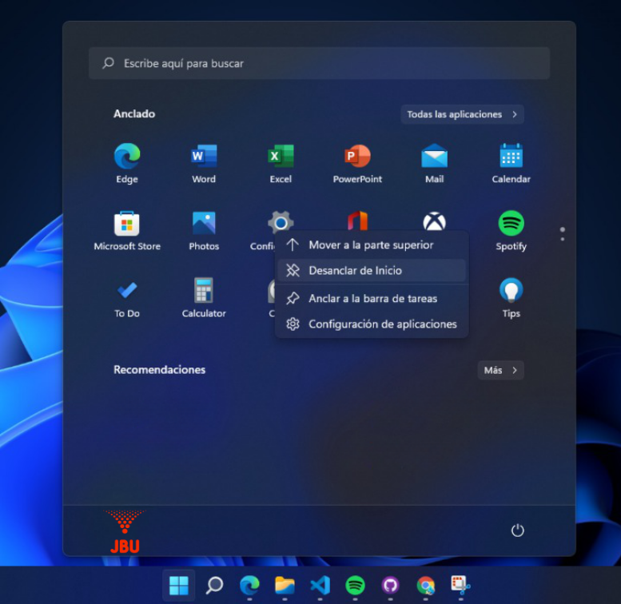
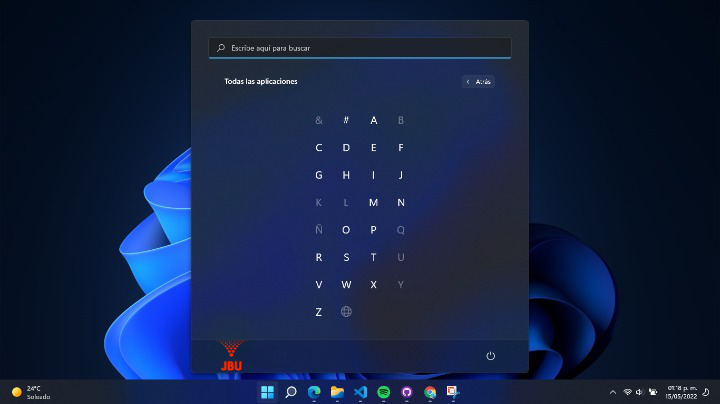

Ahora que no hay baldosas en el menú de inicio, puedes anclar y
desanclar aplicaciones para decidir cuáles son las que aparecen cuando
abres el menú de inicio. Para desanclar las que tienes, simplemente haz
click derecho sobre ellas y elige la opción de desanclar.
Y para anclar aplicaciones, pulsa el menú de inicio y dale a la opción de
Todas las aplicaciones, que la tienes arriba a la derecha. Esto te llevará a la
lista de aplicaciones, y solo haz click derecho sobre la que quieras para
elegir la opción de Anclar a inicio. Si lo prefieres, abre el menú de inicio
y abre la aplicación que quieras, para luego hacer click derecho en ella.

Si tienes muchas aplicaciones instaladas, buscar alguna concreta si no
recuerdas el nombre puede ser un caos. Pero hay un pequeño truco. Hay un
encabezado con cada letra de inicio para las aplicaciones, y si pulsas en este encabezado accederás a un índice, en el que puedes elegir la letra
que quieras para ver solo las aplicaciones que empiecen con esa letra.